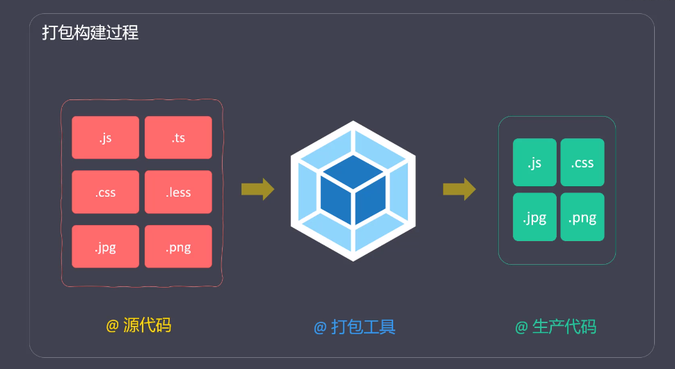
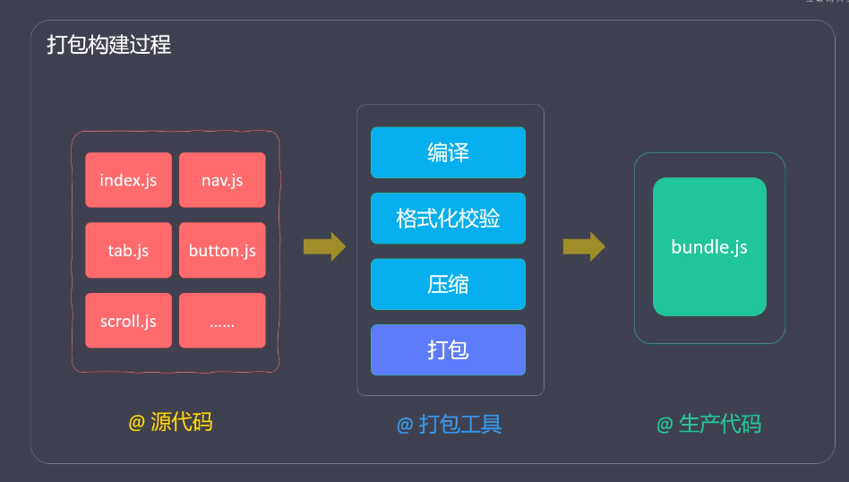

webpack
概述
简介
- Webpack = Web Package
- Webpack是一个现代JS应用程序的
静态模块打包器（module bundler）- 模块 （module 模块化开发，可以提高开发效率，避免重复造轮子）
- 打包（bundler 将各个模块，按照一定的规则组装起来）

- 官网：https://webpack.js.org
- 特点
- 功能强大（打包、构建、发布web服务）
- 学习成本比较高
Webpack的功能
- 将多个文件合并（打包），减少HTTP请求次数，从而提高效率
- 对代码进行编译，确保了浏览器兼容性
- 对代码进行压缩，减少了文件体积，提高加载速度
- 检测代码格式，确保代码质量
- 提供热更新服务，提高开发效率
- 针对不同环境，提供不同的打包策略
Webpack的发展历史
- 2012年3月10日，Webpack诞生
- 2014年2月，Webpack1
- 2016年12月，Webpack2
- 2017年6月，Webpack3
- 2018年2月，Webpack4
- 2020年10月，Webpack5 （Node.js 10.13+）
核心概念
- 入口（Entry）
- 出口（Output）
- 加载器（Loader）
- 插件（Plugins）
- 模式（Mode）
- 依赖图（Dependency Graph）
入口（Entry）
- 打包时，第一个被访问的源码文件
- 默认是src/index.js（可以通过配置文件指定）
- Webpack通过入口，加载整个项目的依赖
出口（Output）
- 打包后，输出的文件名称
- 默认是dist/main.js（可以通过配置文件指定）
loader
- 专门用来处理一类文件（非JS）的工具
- Webpack默认只能识别JS，想要处理其他类型的文件，需要对应的loader
- Webpack默认只能识别JS，想要处理其他类型的文件，需要对应的loader
- 命名方式：xxx-loader（css-loader | html-loader | file-loader）
- 以 -loader 为后缀
- 常用加载器：https://www.webpackjs.com/loaders
plugin
- 实现loader之外的其他功能
- Plugin是Webpack的支柱，用来实现丰富的功能
- 命名方式：xxx-webpack-plugin（html-webpack-plugin）
- 以-webpack-plugin为后缀
- 常用插件：https://www.webpackjs.com/plugins/
Loader和Plugin本质上都是npm包
模式
- 用来区分环境的关键字
- 不同环境的打包逻辑不同，因此，需要区分
- 三种模式
- webpack中，模块的概念比较宽泛（一切皆为模块）
- JS模块
- 一段CSS
- 一张图片
- 一个字体文件
- …
- 详情：https://www.webpackjs.com/concepts/modules/
依赖图
最佳实践
- 初始化项目
- mkdir myproject && cd myproject && npm init -y
- 安装Webpack
- npm install -D webpack webpack-cli/npm install webpack webpack-cli -g
- 创建入口文件
- myproject/src/index.js
- 执行打包（必须指定mode）
- webpack ./src/index.js –output-path ./dist –mode=development
- webpack 版本
- webpack 4 于2018年2月发布
- webpack 5 于2020年10月发布
- 安装命令需要调整（默认安装的是webpack 5）
- 配置文件是用来简化命令行选项的
- 配置前： webpack ./src/index.js –output-path ./dist –mode=development
- 配置后： webpack
- 默认的配置文件名称是webpack.config .js
- webpack.config.js 是以CommonJS规范进行组织的
- 使用webpack的过程，大部分就是跟配置文件打交道的过程
- 配置详情
- https://www.webpackjs.com/configuration/
webpack 配置文件-常用配置项
- https://www.webpackjs.com/configuration/
- mode(模式)
- Entry（入口）
- Output （出口）
- module（模块配置-不同类型文件的配置-loader配置）
- plugins (插件)
- devServer (开发服务器的配置)
基础
- 打包CSS
- 打包HTML
- 打包JS
- 打包图片
- 打包字体
- 资源模块（Asset Modules）
- 开发服务器（Dev Server）
打包CSS
- 打包逻辑
- 打包LESS
- 打包成独立的CSS文件
- 添加样式前缀
- 格式校验
- 压缩CSS
webpack 打包CSS
- 非JS文件打包，需要对应的loader
- css-loader将CSS转化为JS（将CSS输出到打包后的JS文件中）
- style-loader 把包含CSS内容的JS代码，挂载到页面的
<style>标签中
- 引入CSS （import “./css/main.css”）
- 安装（npm i css-loader style-loader -D）
- 配置
- 引入less
- import “./css/main.less”
- 安装
- npm i less less-loader -D
- 配置
- 安装插件
- npm install mini-css-extract-plugin -D
- 引入插件（webpack.config.js）
- const MiniCssExtractPlugin = require(‘mini-css-extract-plugin’);
- 替换 style-loader (use: [‘MiniCssExtractPlugin.loader’,’css-loader’])
- style-loader: 把CSS打包到
<style>标签中 - MiniCssExtractPlugin.loader: 将CSS打包到独立文件中
- style-loader: 把CSS打包到
- 配置插件（new MiniCssExtractPlugin({})）
- 官网 https://www.npmjs.com
添加样式前缀
- 安装
- npm install postcss-loader autoprefixer -D
- 配置 webpack.config.js
- use: [‘MiniCssExtractPlugin.loader’,’css-loader’,’postcss-loader’]
- 新建postcss.config.js
- plugins: [require(‘autoprefixer’)]
- 配置需要兼容的浏览器
- package.json 中指定 browserslist
- 详情参考：https://www.npmjs.com/package/browserslist
校验CSS代码格式
- 安装
- npm i stylelint stylelint-config-standard stylelint-webpack-plugin -D
- 引入
- const StylelintPlugin = require(‘stylelint-webpack-plugin’);
- 配置
- new StylelintPlugin({})
- 指定校验规则（在package.json 中指定stylelint ）
- “stylelint”: {“extends”: “style-config-standard”}
- stylelint
- https://stylelint.io
- 校验规则（number-leading-zero）
- line-height: .5; 错误
- line-height: 0.5; 正确
- stylelint-config-standard
- stylelint-webpack-plugin
- 安装
- npm install optimize-css-assets-webpack-plugin -D
- 引入
- OptimizeCssAssetsPlugin = require(‘optimize-css-assets-webpack-plugin’);
- 配置